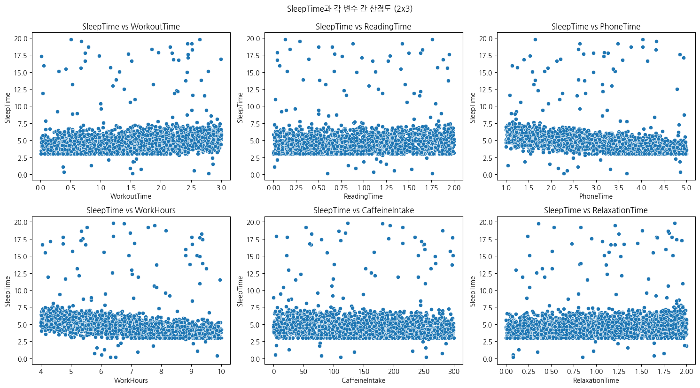
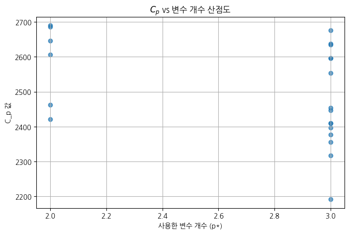

import pandas as pd1. 캐글에서 설명변수의 개수가 5~8개이며 반응변수가 연속형인 데이터를 하나 선택하고 아래 정보를 제출하시오.
1) 데이터 이름과 변수명, 데이터 크기
- 데이터 이름 : Sleep Time Prediction
Sleep = pd.read_csv("sleeptime_prediction_dataset.csv")- 변수명
WorkoutTime: 활동에 사용한 시간 (hours/day)ReadingTime: 독서에 사용한 시간 (hours/day)PhoneTime: 휴대폰 사용 시간 (hours/day)WorkHours: 일에 사용한 시간 (hours/day)CaffeineIntake: 카페인 소비량 (mg/day)RelaxationTime: 휴식에 사용한 시간 (hours/day)SleepTime: 수면에 사용한 총 시간 (hours/night)
Sleep.columnsIndex(['WorkoutTime', 'ReadingTime', 'PhoneTime', 'WorkHours',
'CaffeineIntake', 'RelaxationTime', 'SleepTime'],
dtype='object')- 데이터 크기
Sleep.shape(2000, 7)print(f"행(데이터)의 수: {Sleep.shape[0]}")
print(f"열(변수)의 수: {Sleep.shape[1]}")행(데이터)의 수: 2000
열(변수)의 수: 72) 각 변수별 기초 통계량(평균과 분산, 범주형인 경우 범주별 비율)
- 모든 변수에 타이빙 연속형이고, null 값이 없는 것을 확인
Sleep.info()<class 'pandas.core.frame.DataFrame'>
RangeIndex: 2000 entries, 0 to 1999
Data columns (total 7 columns):
# Column Non-Null Count Dtype
--- ------ -------------- -----
0 WorkoutTime 2000 non-null float64
1 ReadingTime 2000 non-null float64
2 PhoneTime 2000 non-null float64
3 WorkHours 2000 non-null float64
4 CaffeineIntake 2000 non-null float64
5 RelaxationTime 2000 non-null float64
6 SleepTime 2000 non-null float64
dtypes: float64(7)
memory usage: 109.5 KB- 각 변수의 평균과 분산 출력
summary_stats = pd.DataFrame({
'Mean': Sleep.mean(),
'Variance': Sleep.var()
})
print(summary_stats) Mean Variance
WorkoutTime 1.495915 0.768497
ReadingTime 0.992785 0.333278
PhoneTime 2.985195 1.326588
WorkHours 6.926945 2.971634
CaffeineIntake 147.493780 7165.815344
RelaxationTime 1.010955 0.339445
SleepTime 4.884375 4.116403- 추가적인 기초 통계량
Sleep.describe()| WorkoutTime | ReadingTime | PhoneTime | WorkHours | CaffeineIntake | RelaxationTime | SleepTime | |
|---|---|---|---|---|---|---|---|
| count | 2000.000000 | 2000.000000 | 2000.000000 | 2000.000000 | 2000.000000 | 2000.000000 | 2000.000000 |
| mean | 1.495915 | 0.992785 | 2.985195 | 6.926945 | 147.493780 | 1.010955 | 4.884375 |
| std | 0.876639 | 0.577303 | 1.151776 | 1.723843 | 84.651139 | 0.582619 | 2.028892 |
| min | 0.010000 | 0.000000 | 1.000000 | 4.000000 | 0.020000 | 0.000000 | 0.150000 |
| 25% | 0.710000 | 0.500000 | 1.990000 | 5.440000 | 75.980000 | 0.510000 | 3.840000 |
| 50% | 1.520000 | 0.990000 | 2.965000 | 6.910000 | 146.010000 | 1.010000 | 4.600000 |
| 75% | 2.250000 | 1.500000 | 3.960000 | 8.422500 | 218.902500 | 1.530000 | 5.470000 |
| max | 3.000000 | 2.000000 | 5.000000 | 10.000000 | 299.850000 | 2.000000 | 19.810000 |
3) 반응변수와 각 변수들 간의 산점도(행렬 형태 추천)
import seaborn as sns
import matplotlib.pyplot as plt
# 설명변수들
features = ['WorkoutTime', 'ReadingTime', 'PhoneTime', 'WorkHours',
'CaffeineIntake', 'RelaxationTime']
# 서브플롯 설정
fig, axes = plt.subplots(2, 3, figsize=(15, 8))
axes = axes.flatten()
# 각 변수에 대해 산점도 그리기
for i, feature in enumerate(features):
sns.scatterplot(x=Sleep[feature], y=Sleep['SleepTime'], ax=axes[i])
axes[i].set_title(f'SleepTime vs {feature}')
# 여백 자동 조정
plt.tight_layout()
plt.suptitle("SleepTime과 각 변수 간 산점도 (2x3)", y=1.03)
plt.show()
2. 다음을 시행하시오 (모두 다 파이썬이나 R 이용)
1) 모든 변수를 이용하여 회귀분석을 시행하고 모형의 유의성을 유의수준 0.05에서 검정하시오
import statsmodels.api as sm- 독립변수(X)와 종속변수(y) 로 분리
X = Sleep.drop(columns=['SleepTime'])
y = Sleep['SleepTime']- 절편을 위한 상수항 추가
X = sm.add_constant(X)- 상수항 이름 const에서 intercept로 변경
X.columns= ['intercept','WorkoutTime', 'ReadingTime', 'PhoneTime', 'WorkHours',
'CaffeineIntake', 'RelaxationTime']print(X[:5]) intercept WorkoutTime ReadingTime PhoneTime WorkHours CaffeineIntake \
0 1.0 1.12 0.52 3.29 7.89 216.08
1 1.0 2.85 0.49 4.22 5.03 206.18
2 1.0 2.20 1.81 4.04 9.23 28.73
3 1.0 1.80 0.50 1.62 7.68 276.77
4 1.0 0.47 0.54 1.60 4.94 170.54
RelaxationTime
0 0.75
1 0.67
2 0.35
3 1.21
4 0.95 - F-statistic : 전체 회귀모형이 통계적으로 유의한지 검정하는 통계량
Prob (F-statistic): F-검정의 p-value- 이 값이 (2.71e-127) 매우 작으므로 전체 모형이 유의 하다고 할 수 있다.
model = sm.OLS(y, X)
results = model.fit()
print(results.summary()) OLS Regression Results
==============================================================================
Dep. Variable: SleepTime R-squared: 0.261
Model: OLS Adj. R-squared: 0.259
Method: Least Squares F-statistic: 117.5
Date: Tue, 15 Apr 2025 Prob (F-statistic): 2.71e-127
Time: 11:13:58 Log-Likelihood: -3949.4
No. Observations: 2000 AIC: 7913.
Df Residuals: 1993 BIC: 7952.
Df Model: 6
Covariance Type: nonrobust
==================================================================================
coef std err t P>|t| [0.025 0.975]
----------------------------------------------------------------------------------
intercept 7.8462 0.231 33.973 0.000 7.393 8.299
WorkoutTime 0.4768 0.045 10.672 0.000 0.389 0.564
ReadingTime 0.2102 0.068 3.104 0.002 0.077 0.343
PhoneTime -0.5612 0.034 -16.520 0.000 -0.628 -0.495
WorkHours -0.3601 0.023 -15.857 0.000 -0.405 -0.316
CaffeineIntake -0.0014 0.000 -2.976 0.003 -0.002 -0.000
RelaxationTime 0.4837 0.067 7.193 0.000 0.352 0.616
==============================================================================
Omnibus: 2315.894 Durbin-Watson: 2.023
Prob(Omnibus): 0.000 Jarque-Bera (JB): 157684.352
Skew: 6.152 Prob(JB): 0.00
Kurtosis: 44.723 Cond. No. 1.02e+03
==============================================================================
Notes:
[1] Standard Errors assume that the covariance matrix of the errors is correctly specified.
[2] The condition number is large, 1.02e+03. This might indicate that there are
strong multicollinearity or other numerical problems.2) \(\hat{\sigma^2} = \sum_{i=1}^{n}\frac{(\hat{y}_i-y_i)^2}{n-p-1}\)를 구하시오. 모든 변수들과 절편을 포함한 회귀분석에서의 예측을 이용하며 \(p\)는 사용한 모든 변수들의 개수임.
- 예측값
y_pred = results.fittedvalues- n, p 설정
n = len(y)
p = X.shape[1]-1- \(\hat{\sigma^2}\) 계산
sigma_squared_hat = np.sum(results.resid**2 / (n-p-1))- \(\hat{\sigma^2}\) = 3.0497
print(f'추정된 sigma^2 : {sigma_squared_hat:.4f}')추정된 sigma^2 : 3.04973) 하나의 변수나 두 개의 변수를 사용하여 각 모형에서 \(C_p=RSS/\hat{\sigma^2}+2p^*\)를 계산하고 결과를 산점도로 표시하시오(가로축은 사용한 변수의 개수, 세로축은 계산된 \(C_p^*\)값). 여기에서 RSS는 회귀모형의 잔차곱합이며 \(p^*\)는 RSS에서 사용한 변수들의 개수이며, 하나의 변수를 사용하면 \(p\)개의 모형이 두 개의 변수를 사용하면 \(p(p-1)\)개의 모형이 고려될 수 있음(산점도에 총 \(p+p(p-1))\)개의 점이 찍혀야함)
- 변수가 두개 일때는 p(p-1)/2 개의 점이 찍혀야하는것 아닌가요?..(중복제거)
import itertools
import matplotlib.pyplot as pltcp_list = []
pstar_list = []
used_features = []
# === 변수 1개씩 사용하는 모형들 ===
for var in features:
used_features.append(var)
X = sm.add_constant(Sleep[[var]]) # 절편 포함
model = sm.OLS(y, X).fit()
rss = sum((y-model.fittedvalues)**2)
p_star = 2 # 변수 1개 + 절편
cp = rss / sigma_squared_hat + 2 * p_star
cp_list.append(cp)
pstar_list.append(p_star)
# === 변수 2개씩 사용하는 모형들 ===
for var1, var2 in itertools.combinations(features, 2):
used_features.append([var1,var2])
X = sm.add_constant(Sleep[[var1, var2]])
model = sm.OLS(y, X).fit()
rss = sum((model.fittedvalues - y)**2)
p_star = 3 # 변수 2개 + 절편
cp = rss / sigma_squared_hat + 2 * p_star
cp_list.append(cp)
pstar_list.append(p_star)
# === 산점도 그리기 ===
plt.figure(figsize=(8, 5))
plt.scatter(pstar_list, cp_list, alpha=0.7)
plt.xlabel("사용한 변수 개수 (p*)")
plt.ylabel("C_p 값")
plt.title("$C_p$ vs 변수 개수 산점도")
plt.grid(True)
plt.show()
4) 계산한 3)의 값들 중 가장 작은 값은 어떤 변수(들)을 사용할 때인가?
- PhoneTime, WorkHours 를 사용할 때 \(C_p\)의 값이 가장 작다
used_features[np.argmin(cp_list)]['PhoneTime', 'WorkHours']3. 반응변수가 중앙값을 초과할 때 1, 이하일 때 0으로 하여 아래를 시행하시오.
1) 로지스틱 회귀분석을 시행해서 혼동행렬을 구하시오
from ISLP import confusion_table
from ISLP.models import (ModelSpec as MS,summarize)
from sklearn.model_selection import train_test_split- y 를 반응변수 SleepTime의 중앙값을 초과하면 1, 이하이면 0
X = Sleep.drop(columns=['SleepTime'])
y = (Sleep['SleepTime']>median_sleep).astype(int)- 상수항 추가
design = MS(X)X=design.fit_transform(X)X[:5]| intercept | WorkoutTime | ReadingTime | PhoneTime | WorkHours | CaffeineIntake | RelaxationTime | |
|---|---|---|---|---|---|---|---|
| 0 | 1.0 | 1.12 | 0.52 | 3.29 | 7.89 | 216.08 | 0.75 |
| 1 | 1.0 | 2.85 | 0.49 | 4.22 | 5.03 | 206.18 | 0.67 |
| 2 | 1.0 | 2.20 | 1.81 | 4.04 | 9.23 | 28.73 | 0.35 |
| 3 | 1.0 | 1.80 | 0.50 | 1.62 | 7.68 | 276.77 | 1.21 |
| 4 | 1.0 | 0.47 | 0.54 | 1.60 | 4.94 | 170.54 | 0.95 |
- train과 test로 분리 비율 0.7 : 0.3
X_train, X_test, y_train, y_test = train_test_split(X, y, test_size=0.3, random_state=42)- 로지스틱 회귀분석 모델 생성 및 적합
glm = sm.GLM(y_train, X_train, family=sm.families.Binomial())
results = glm.fit()
print(summarize(results)) coef std err z P>|z|
WorkoutTime 1.6071 0.105 15.348 0.000
ReadingTime 1.5103 0.139 10.838 0.000
PhoneTime -1.0310 0.072 -14.263 0.000
WorkHours -0.4311 0.036 -11.868 0.000
CaffeineIntake 0.0004 0.001 0.487 0.626
RelaxationTime 1.7463 0.141 12.413 0.000- 예측한 확률이 0.5보다 크면 1로, 작으면 0으로 labels에 저장
probs = results.predict(exog=X_test)
labels = np.array([0]*len(y_test)) # 기본값 0
labels[probs > 0.5] = 1
print(list(probs)[:5])
print(labels[:5])[0.9911024037508189, 0.13970493273847814, 0.9362503403933953, 0.9184685442097736, 0.012038711545818204]
[1 0 1 1 0]- 혼동행렬
confusion_table(labels, y_test)| Truth | 0 | 1 |
|---|---|---|
| Predicted | ||
| 0 | 248 | 68 |
| 1 | 42 | 242 |
- 정확도
np.mean(labels == y_test)0.81666666666666672) LDA를 시행해서 혼동행렬을 구하시오
from sklearn.discriminant_analysis import LinearDiscriminantAnalysis as LDA- 상수항이 없는 X데이터 사용
X = Sleep.drop(columns=['SleepTime'])
y = (Sleep['SleepTime']>median_sleep).astype(int)- train과 test로 분리 비율 0.7:0.3
X_train, X_test, y_train, y_test = train_test_split(X, y, test_size=0.3, random_state=42)- LDA 적합 및 예측
lda = LDA(store_covariance=True)
lda.fit(X_train, y_train)
lda_pred = lda.predict(X_test)
print(lda_pred[:15])[1 0 1 1 0 0 0 1 1 0 0 1 0 0 1]- 혼동행렬
confusion_table(lda_pred, y_test)| Truth | 0 | 1 |
|---|---|---|
| Predicted | ||
| 0 | 288 | 15 |
| 1 | 2 | 295 |
3) 2)번에서 민감도와 특이도는 어떻게 되는가. 민감도는 1을 기준으로 함
- 민감도 TP/(TP+FN)
- 특이도 TN/(TN+FP)
- TP : 실제1 \(\to\) 예측1 (정답)
- FN : 실제1 \(\to\) 예측0 (틀림)
- TN : 실제0 \(\to\) 예측0 (정답)
- FP : 실제0 \(\to\) 예측1 (틀림)
- 혼동행렬
cm = confusion_table(lda_pred,y_test)cm| Truth | 0 | 1 |
|---|---|---|
| Predicted | ||
| 0 | 288 | 15 |
| 1 | 2 | 295 |
- 2차원구조 인덱싱을 통해 값 대입
TP = cm[1][1]
FN = cm[1][0]
TN = cm[0][0]
FP = cm[0][1]TP, FN, TN, FP(295, 15, 288, 2)- 민감도 특이도 계산
# 민감도 (class 1 기준)
sensitivity = TP / (TP + FN)
# 특이도 (class 0 기준)
specificity = TN / (TN + FP)
print(f"민감도 (class=1): {sensitivity:.2f}")
print(f"특이도 (class=0): {specificity:.2f}")민감도 (class=1): 0.95
특이도 (class=0): 0.994) 3)번에서 예측의 규칙을 바꾸어 1에 대한 예측확률이 0.20 이상일 때 1로 예측하면 민감도와 특이도는 어떻게 변하는가?
- 1 값에 대한 확률 계산
probs[:5]array([0.99768879, 0.0077565 , 0.96238128, 0.99887321, 0.0017131 ])probs = lda.predict_proba(X_test)[:,1] - 예측기준 0.20으로 설정해 새로운 예측값 생성
custom_pred = (probs > 0.20).astype(int)cm = confusion_table(custom_pred,y_test)- 새로운 혼동행렬
cm| Truth | 0 | 1 |
|---|---|---|
| Predicted | ||
| 0 | 211 | 8 |
| 1 | 79 | 302 |
sum(custom_pred ==1)381TP = cm[1][1]
FN = cm[1][0]
TN = cm[0][0]
FP = cm[0][1]TP, FN, TN, FP(302, 8, 211, 79)- 민감도 특이도 계산
# 민감도 (class 1 기준)
sensitivity = TP / (TP + FN)
# 특이도 (class 0 기준)
specificity = TN / (TN + FP)
print(f"민감도 (class=1): {sensitivity:.2f}")
print(f"특이도 (class=0): {specificity:.2f}")민감도 (class=1): 0.97
특이도 (class=0): 0.73- 클래스 1로 분류되는 사례 TP, FP가 늘어나면서 민감도가 증가하고 특이도가 감소하였다